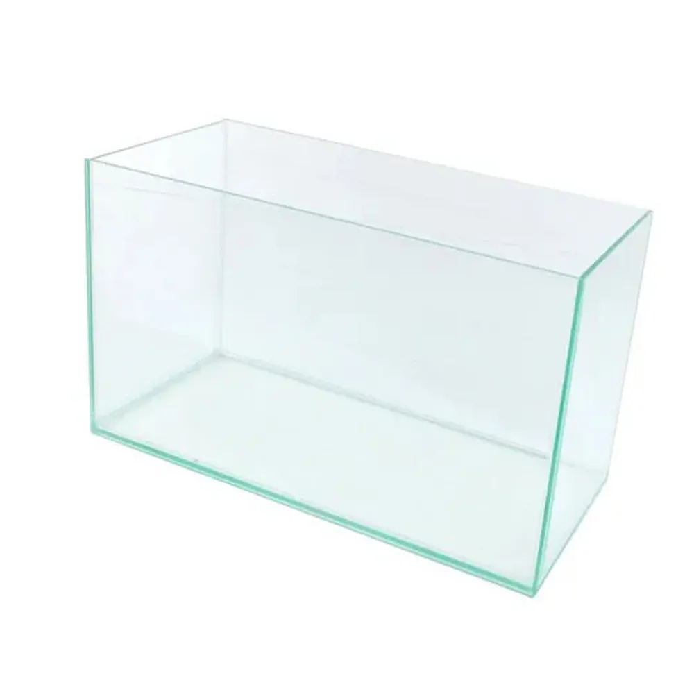

ItaPets
Produtos
Contato
Aquário Baixo Costa Mar

Aquário de vidro para peixes ornamentais
Especificações do Produto
Preço
R$ 29,90
Marca
Costa Mar
Indicado para
Peixes ornamentais
Descrição
Aquário de vidro em formato baixo, ideal para peixes ornamentais de pequeno porte.
Voltar para os produtos